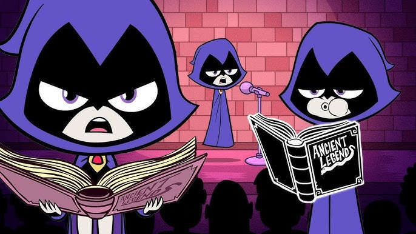
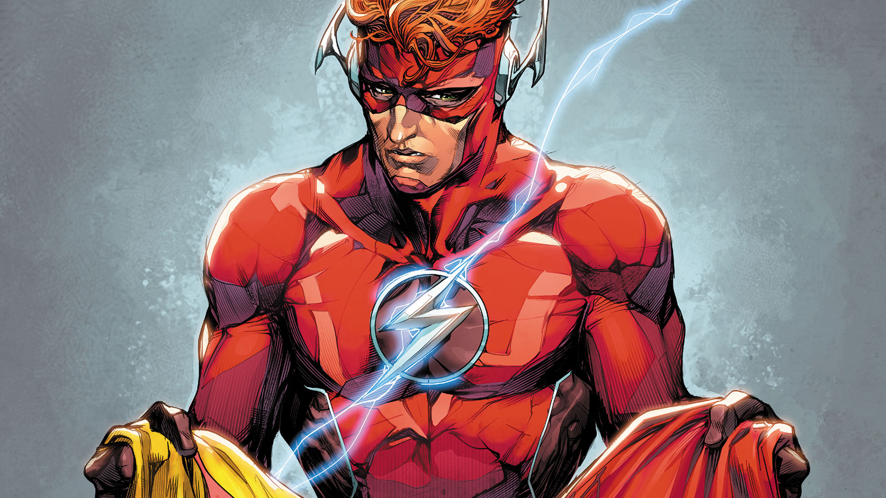
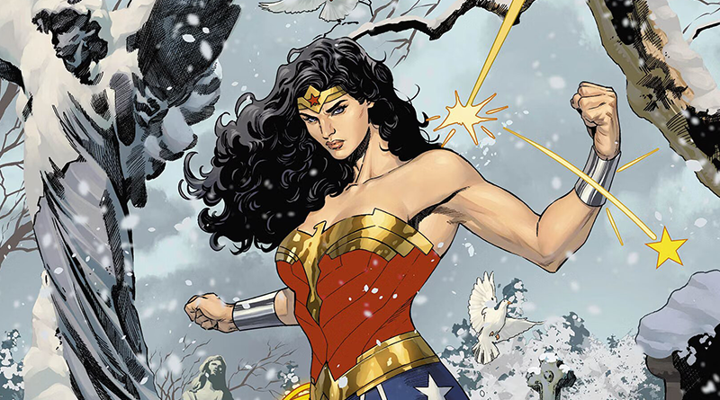
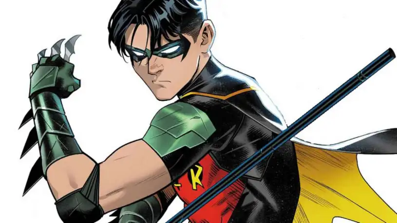

História da Ravena
1
2
3
Ravena é uma personagem do universo DC, filha de Trigon, um demônio cósmico, e Arella, uma humana. Ela nasceu com poderes sobrenaturais e uma conexão com a escuridão. Criada em um convento, Raven luta para controlar seus poderes e evitar que seu pai destrua o mundo. Ela se junta aos Jovens Titãs para combater Trigon e outras ameaças, enfrentando sua batalha interna entre sua natureza humana e a influência maligna de seu pai. Ravena é uma poderosa feiticeira com habilidades como telecinese, controle das sombras e empatia. Sua história é marcada por conflitos emocionais, sendo uma personagem complexa e reservada.
Aliados
Kid Flash
Moça Maravilha
Robin
A equipe era composta por Robin, Moça Maravilha, Kid Flash, Estelar, Cyborg e Mutano. Nesta encarnação, Ravena foi considerada uma pessoa sombria, muitas vezes notavam-se em suas observações um tom de sarcasmo e/ou ironia.
Vilões
Trigon

Slade Wilson Deathstroke